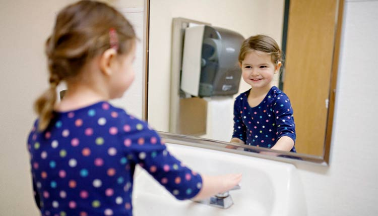

女人心，海底针，说变就变……《来自星星的你》热播时口口声声说着非教授不嫁的女人，瞬间变脸，说自己的老公是宋仲基。这些年，除了坚持癌症、车祸、医不好的三大原则外，外星人、半兽人、长腿花美男、卖萌大叔也来助阵，加上穿越、灵异、超能力等题材上的突破，韩剧当仁不让地占领了中国广阔的25-50岁女性市场。韩剧更新一部又一部，老公换了又换，痴迷的人们却总是能自动忽略剧中“老公”身边blingbling的女主角。
在吸睛无数的韩剧中，男主角身边总会有一个让他为之赴汤蹈火的女主角，教授有他的千颂伊，大尉有他的姜暮烟医生。
这个医生是韩国某大型知名医院的著名医生，由于对非正当的“潜规则”采取了强硬的反抗而遭到“流放”——被派往战乱地区“乌鲁克”去支援当地医疗。好巧不巧的这位医生到了那就遭遇了一场地震，在地震中医生不退缩不逃避，完美的展示了医生救死扶伤的精神。那么问题来了！如果在各种大小型手术、对重伤病患的救助过程中，她都不洗手的话……
卫生保健相关感染是指病菌通过医护人员接触患者后传播发生的，这通常会给患者带来极大生理和心理痛苦，有时甚至会导致死亡。世卫组织患者安全特使指出，在世界各地医源性感染都是一项沉重的负担，影响着患者的安全和治疗。他敦促卫生界采取坚定和果断行动，对付这一本可预防的危害，拯救患者生命。
世卫组织认为，如果医护人员能够做到适时清洗双手、保持手部卫生，就可使这类感染减少一半。每年5月5日是“世界手部卫生日”，由世界卫生组织于2009年倡议发起，旨在强调在医疗护理过程中提高医护人员手部卫生、减少医源性感染的重要性。
1、每年5月5日是世界手部卫生日，设立节日是为了提高医护人员保持手部卫生的意识，减少医源性感染；
2、注意手部卫生是每个人都要做到的，饭前便后记得洗手哦！